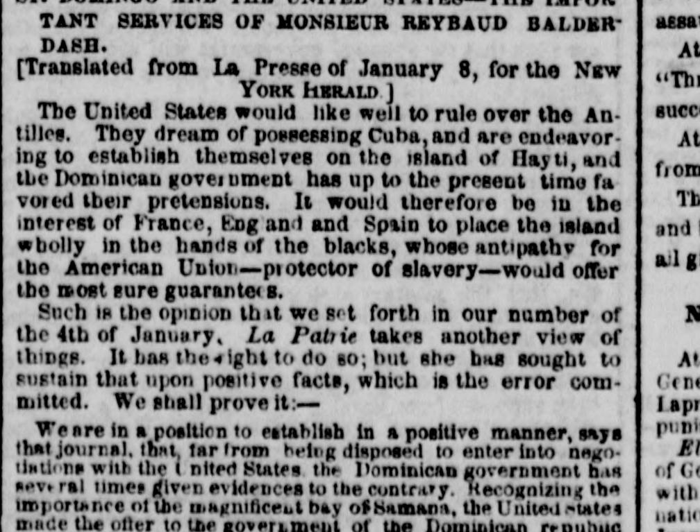

 See the full pageVer la página completa
See the full pageVer la página completa
1 We are In a position to establish In a positiveEstamos en condiciones de establecer de manera positiva
The New York Herald reported on a dispute with the journal La Patrie regarding whether the Dominican government was willing to enter negotiations with the United States. La Patrie claimed that the Dominican government had repeatedly rejected U.S. offers, including an alleged offer through General Santana of 100 million francs for the right to establish a coal depot and naval station at Samana.The New York Herald informó sobre una disputa con el periódico La Patrie respecto a si el gobierno dominicano estaba dispuesto a entablar negociaciones con los Estados Unidos. La Patrie afirmó que el gobierno dominicano había rechazado reiteradamente las ofertas estadounidenses, incluida una supuesta oferta transmitida a través del general Santana de 100 millones de francos a cambio del derecho a establecer un depósito de carbón y una estación naval en Samaná.
FULL TEXT:TRADUCCIÓN:
ST. DOMINGO AND THE UNITED STATES—THE IMPORTANT SERVICES OF MONSIEUR REYBAUD BALDERDASH.SANTO DOMINGO Y LOS ESTADOS UNIDOS —LOS IMPORTANTES SERVICIOS DE MONSIEUR REYBAUD BALDERDASH.
[Translated from La Presse of January 8, for the NEW YORK HERALD.][Traducido de La Presse del 8 de enero, para el NEW YORK HERALD.]
The United States would like well to rule over the Antilles. They dream of possessing Cuba, and are endeavoring to establish themselves on the island of Hayti, and the Dominican government has up to the present time favored their pretensions. It would therefore be in the interest of France, England and Spain to place the island wholly in the hands of the blacks, whose antipathy for the American Union—protector of slavery—would offer the most sure guarantees.Los Estados Unidos gustarían bien gobernar sobre las Antillas. Sueñan con poseer Cuba, y están esforzándose por establecerse en la isla de Haití, y el gobierno dominicano ha favorecido hasta el presente sus pretensiones. Sería por tanto en el interés de Francia, Inglaterra y España colocar la isla totalmente en manos de los negros, cuya antipatía por la Unión Americana —protectora de la esclavitud— ofrecería las garantías más seguras.
Such is the opinion that we set forth in our number of the 4th of January. La Patrie takes another view of things. It has the right to do so; but she has sought to sustain that upon positive facts, which is the error committed. We shall prove it:—Tal es la opinión que expusimos en nuestro número del 4 de enero. La Patrie toma otra vista de las cosas. Tiene el derecho de hacerlo; pero ha buscado sostener eso sobre hechos positivos, que es el error cometido. Lo probaremos:—
We are in a position to establish in a positive manner, says that journal, that, far from being disposed to enter into negotiations with the United States, the Dominican government has several times given evidences to the contrary. Recognizing the importance of the magnificent bay of Samana, the United States made the offer to the government of the Dominican republicEstamos en posición de establecer de una manera positiva, dice ese diario, que, lejos de estar dispuesto a entrar en negociaciones con los Estados Unidos, el gobierno dominicano ha dado varias veces evidencias en contrario. Reconociendo la importancia de la magnífica bahía de Samaná, los Estados Unidos hicieron la oferta al gobierno de la república dominicana
[Editor's note: the paper writes of the east as part of Hayti. From 1822 to 1844 the Dominican Republic was held by Haitian military occupation, against its people's will; it restored its independence on February 27, 1844.][Nota del editor: el periódico habla del este como parte de Haití. De 1822 a 1844 la República Dominicana estuvo bajo ocupación militar haitiana, contra la voluntad de su pueblo; restauró su independencia el 27 de febrero de 1844.]
The New York Herald. New York, January 31, 1859. Page 1.